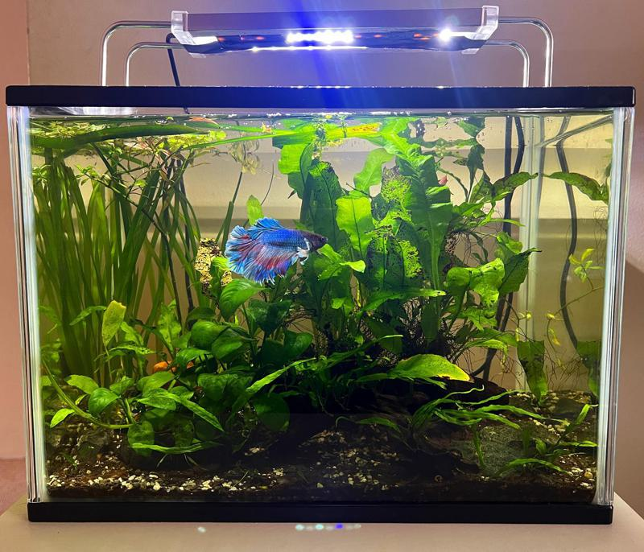

Welcome to the captivating world of Betta fish keeping, where beauty meets responsibility. Our website is your ultimate destination for all things Betta-related, designed to be your trusted resource for every aspect of caring for these stunning aquatic companions. Whether you're a seasoned Betta enthusiast or just starting your journey into this fascinating hobby, I'm here to provide you with my insights, practical tips, and a wealth of information to ensure the health and happiness of your Betta fish. Dive in and discover the secrets to creating a thriving Betta habitat and fostering a strong bond with these remarkable aquatic wonders. Join us on a journey that celebrates the art and science of Betta fish care.
